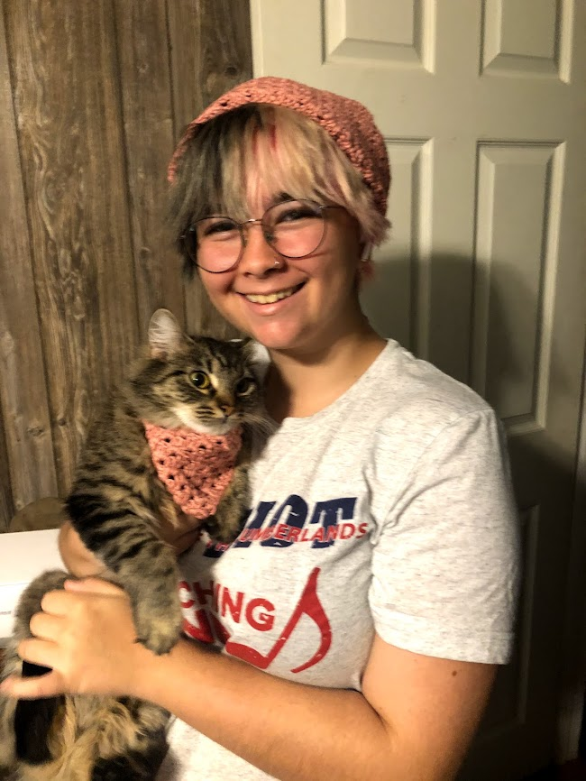

About Us
If You Give A Kid Yarn is a small business that is located in Williamsburg, Kentucky. It is ran by Emily Leach, who is a college student attending University of the Cumberlands. As a college student, Emily works to fulfill all orders in between class, homework, and other student obligations.
If You Give A Kid Yarn began in August of 2020. While in quarantine, the business began as a portfolio-type of Instagram page, but has since grown to actually taking orders. We strive to provide high-quality handmade crochet items to the Appalachian area. We are also striving to keep small business and fiber art alive in a world that focuses on fast fashion and high production.